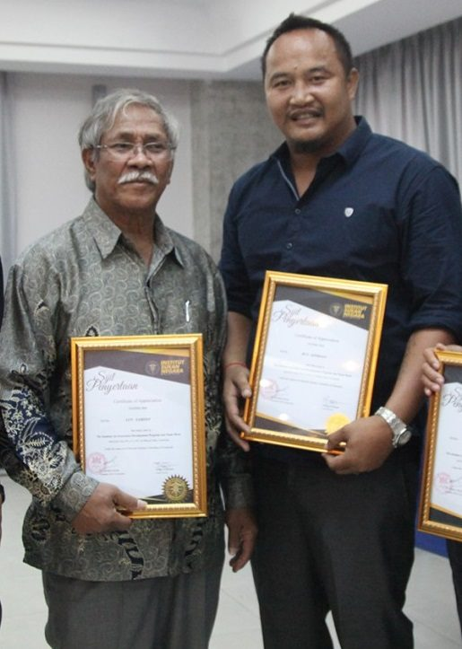

Эх Пхутонг: боец из Кохконга, ставший лицом кун-кхмера
Чемпион страны в нескольких весовых категориях, он побеждал иностранных соперников в Пномпене, бесплатно учил уличных детей и теперь тренирует новых чемпионов Камбоджи.

Из Кохконга в Пномпень
Эх Пхутонг, при рождении Эх Лим, родился в провинции Кохконг на юго-западе Камбоджи; большинство источников называют датой рождения 14 октября 1975 года. Имя Пхутонг он взял в честь Ют Пхутонга — родственника, который первым начал его тренировать. Национальным боевым искусством кун-кхмер (его также называют прадал серей) он стал заниматься примерно в 12 лет и тренировался в провинции Прейвэнг у Кунг Сроя.
В 16 лет он переехал в Пномпень и начал работать с Чхит Саримом в боксёрском клубе Министерства обороны. Выступать он начал в конце подросткового возраста. По данным агентства AFP, он вырос в бедности и в детстве не ходил в школу.

Чемпион в нескольких весах
Он начинал в весе 48 килограммов, а с годами поднялся до 63 и затем до 85. Он выигрывал золото чемпионатов страны в категориях от 45 до 67 килограммов, а к 2003 году удерживал звание чемпиона Камбоджи более трёх лет.
В 2001 году он победил в Пномпене француза Жана-Шарля Скарбовски. В 2003-м выиграл международный чемпионат CBA по кун-кхмеру, одолев Фейсала Закарию из Судана, а в Таиланде дошёл до полуфинала первого турнира S1.
Точный рекорд его боёв неизвестен: поединки по разным правилам считали по-разному. В профиле, опубликованном в 2007 году, говорилось о 140 победах в 150 боях к 2006 году. В 2011 году AFP писало, что у него почти 200 побед почти за два десятилетия на ринге. Он был известен ударом правой ногой.

Последние годы на ринге
В марте 2008 года он проиграл по очкам Адаму Шахиру Кайюму на Олимпийском стадионе в Пномпене. После боя он сказал, что думает о завершении карьеры, сообщала тогда газета Cambodia Daily. Но он продолжил выступать: в 2009 году выиграл бронзу в боксе на Играх Юго-Восточной Азии в Лаосе, а в феврале 2010-го остановил Питу Санса в первом раунде в Пномпене.
Работа с новым поколением
В 2005 году Эх Пхутонг открыл собственный клуб в пномпеньском районе Тонлебассак. В 2011 году AFP рассказало о его работе в посёлке для переселенцев примерно в 20 километрах от центра города под заголовком «Камбоджийский „Мухаммед Али“ сражается за уличных детей». Сначала он бесплатно занимался там с местными ребятами, а затем вёл занятия по кикбоксингу примерно для 20 детей от 3 до 14 лет в общественном центре австралийской благотворительной организации Child Wise.
Он также снялся в двух боевиках на кхмерском языке и был соведущим телешоу Kun Khmer Champion на канале CTN.
Тренер
Сейчас он завершил карьеру бойца и работает тренером в Пномпене. Самый известный его ученик — Тхоён Тхеара, который в декабре 2023 года стал первым кхмерским бойцом, выигравшим тайский титул, сообщала Phnom Penh Post. В 2023 году Эх Пхутонг получил приз лучшему тренеру чемпионата мира по кхмерскому боксу Techo Santepheap, а его клуб вновь открылся в рамках нового партнёрства под названием Galaxy Navatra Eh Phouthong.